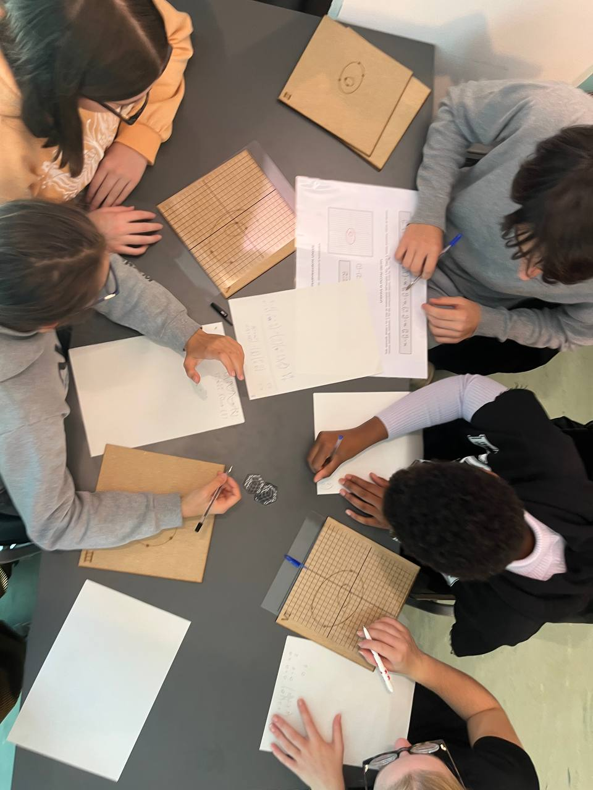
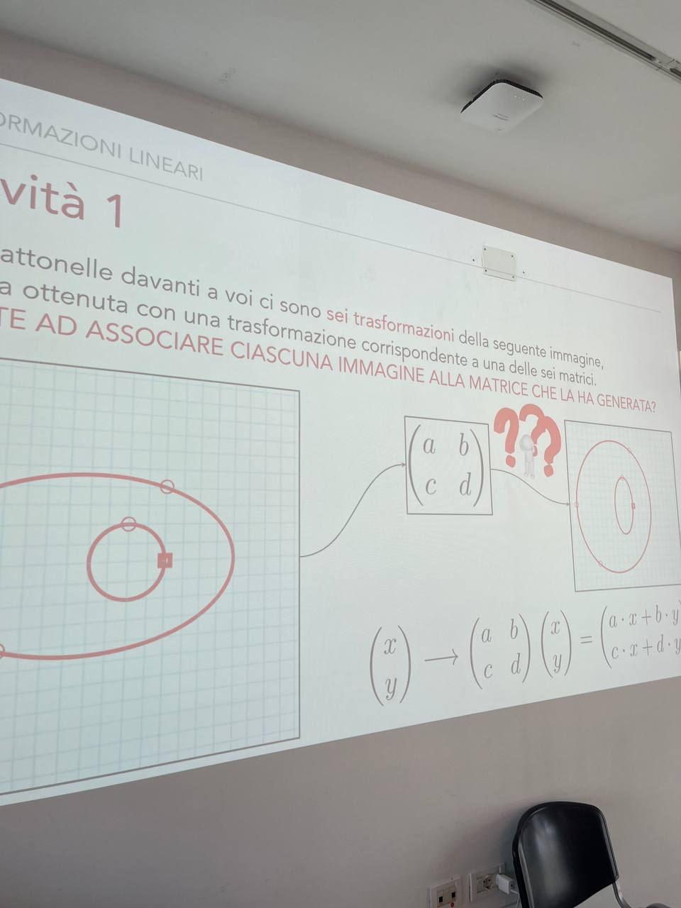
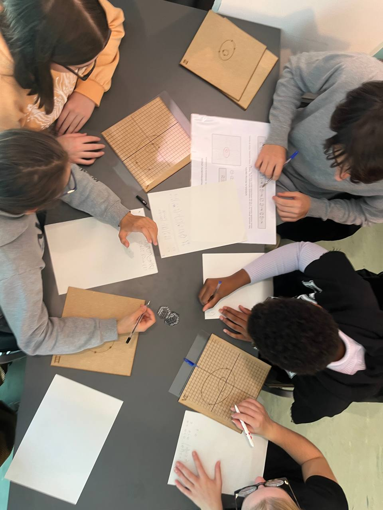
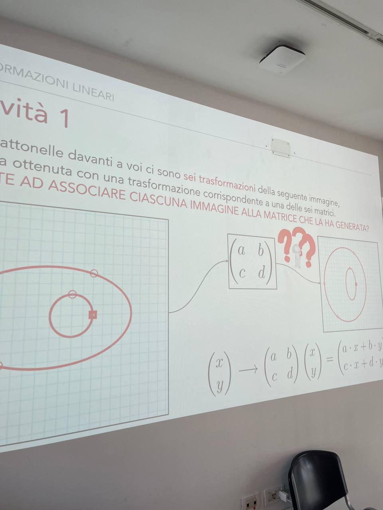

Outreach and Public Engagement
Dissemination activities, laboratories and workshops organized for schools and the general public.
Acconciature, Trecce, Cravatte
Laboratory activity for schools on the theory of Braid Groups.
Organised with: Agnese Del Zozzo, Matilde Calabri, Davide Borra, based on works by Ester Dalvit
Festival della Scienza di Genova
Moltiplichiamo! Tra regoli, immagini e reti neurali
Laboratory activity for schools about various types of multiplications, from operations with numbers to those between matrices, with the aim of discovering that matrix operations are the basis of many computer applications: from image recognition to recommendation algorithms.
Organised with: Alessandra Bernardi, Mima Stanojkovski, Elisa Postinghel, Enea Menabue
BergamoScienza 2025
 



Per imparare bisogna sbagliare
Laboratory activity for schools on Reinforcement Learning.
Organised with: Carlotta Vielmo, Luigi Amedeo Bianchi, Maia Santi
Festival della Scienza di Genova 2024; BergamoScienza 2025
{kind=link}
Hex: una lezione di topologia su scacchiera
A lecture for high school students. Inspired by the book "Giochi e Percorsi Matematici", by Emanuele Delucchi, Giovanni Gaiffi, Ludovico Pernazza "
Department of Mathematics, U. Trento
Matematici per Gioco
Laboratory activity for the general audience on the relation between games and mathematics.
Organised with: M. Tomasi, C. Vielmo, A. Del Zozzo
Genova 2022; EDUCA Rovereto 2023; BergamoScienza 2023
A dissemination protocol between University, School and Society
Collaborative path between researchers, undergraduate students and high school students to implement outreach activities at U. Trento.
Organised with: A. Del Zozzo, C. Vielmo, M. Andreatta in collaboration with FabLab UniTrento.
Supported by INdAM
Recostruint l’evolució amb matemàtiques
Interactive workshop for high school students on phylogenetic mathematical models.
Organised with: M. Garrote Lòpez, M. Casanellas
Inst. d'Estudis Catalans, Barcelona
Formae Mathematicae
A full-day event with laboratories, expositions and seminars.
Organised with: M. Garrote Lòpez
European Researchers' Night, Barcelona